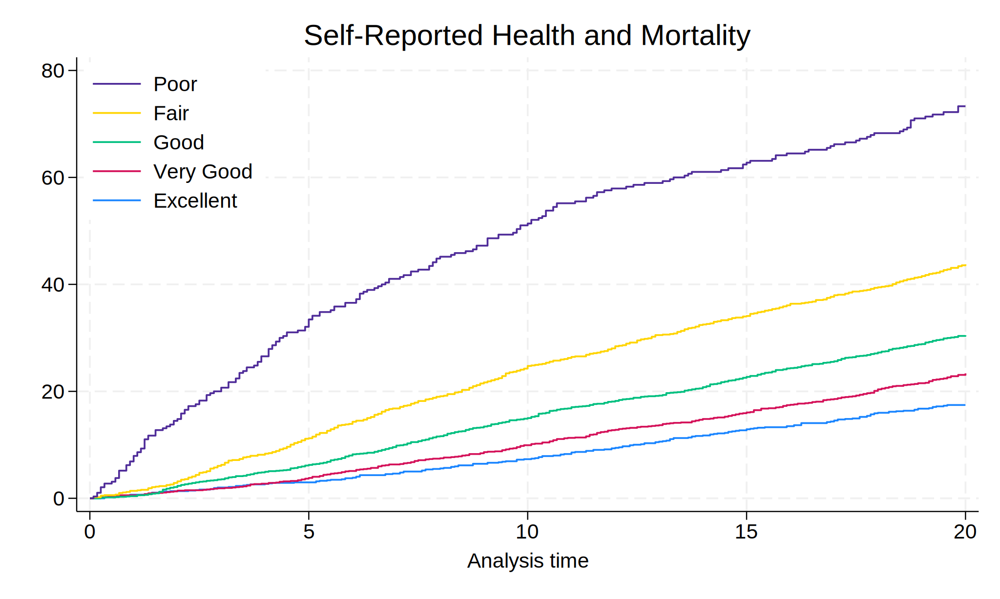

. cls
. //1. data
. global repo "https://github.com/jhustata/project/raw/main/"
. global nhanes "https://wwwn.cdc.gov/Nchs/Nhanes/"
.
. //2. code
. do ${repo}followup.do
. save followup, replace
. import sasxport5 "${nhanes}1999-2000/DEMO.XPT", clear
. merge 1:1 seqn using followup, nogen
. save survey_followup, replace
.
. //3. parameters
. import sasxport5 "${nhanes}1999-2000/HUQ.XPT", clear
. tab huq010
. merge 1:1 seqn using survey_followup, nogen keep(matched)
. rm followup.dta
. rm survey_followup.dta
. g years=permth_int/12
. stset years, fail(mortstat)
. replace huq010=. if huq010==9
. label define huq 1 "Excellent" 2 "Very Good" 3 "Good" 4 "Fair" 5 "Poor"
. label values huq010 huq
. levelsof huq010, local(numlevels)
. local i=1
. foreach l of numlist `numlevels' {
. save week7, replace
. sts graph, ///
> by(huq010) ///
> fail ///
> per(100) ///
> ylab(0(20)80 , ///
> format(%2.0f) ///
> ) ///
> xlab(0(5)20) ///
> tmax(20) ///
> ti("Self-Reported Health and Mortality") ///
> legend( ///
> order(5 4 3 2 1) ///
> lab(1 "$legend1") ///
> lab(2 "$legend2") ///
> lab(3 "$legend3") ///
> lab(4 "$legend4") ///
> lab(5 "$legend5") ///
> ring(0) pos(11) ///
> )
. graph export nonpara.png, replace
.
